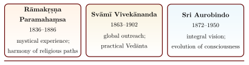

Chapter 12: Contemporary Relevance of the Upaniṣads¶
“In the whole world there is no study, except that of the originals, so beneficial and so elevating as that of the Oupnekhat. It has been the solace of my life, it will be the solace of my death!”
— Arthur Schopenhauer, Parerga und Paralipomena (1851), vol. 2, §185, as translated by F. Max Müller (Sacred Books of the East, vol. 1)
12.1 Introduction: A Living Tradition¶
The Upaniṣads are not only objects of historical study. They are read, chanted, studied, debated and used as guides to practice today — by traditional paṇḍits in Sanskrit pāṭhaśālās, by monastic orders and lay study groups, and by philosophers, psychologists and general readers across the world.
This chapter traces the Neo-Vedānta movement that carried Upaniṣadic ideas into the modern world; the Western reception of the Upaniṣads, from their passage to Europe through Persian and Latin to the present; the claims made about the Upaniṣads and modern physics, and why most of them should be rejected; engagements with psychology and consciousness studies; the history of academic Upaniṣadic scholarship; practices of meditation and self-enquiry; and the place of the Upaniṣads in contemporary Indian education. Throughout, the aim is to distinguish genuine historical influence and fruitful comparison from exaggerated claims of priority.
12.2 Neo-Vedānta: Upaniṣadic Thought in the Modern World¶
The term Neo-Vedānta refers broadly to the reformulation of Upaniṣadic and Vedāntic philosophy for the modern educated reader, Indian and global. The movement emerged in the nineteenth and early twentieth centuries, in the context of colonial rule, Christian missionary criticism and India’s encounter with Western science and philosophy. Earlier figures such as Rām Mohan Roy (1772–1833), who translated several Upaniṣads into Bengali and English between 1816 and 1819 and founded the Brāhmo Samāj, had already presented the Upaniṣads as the basis of a rational, monotheistic Hinduism (Figure 12.1).
12.2.1 Rāmakṛṣṇa Paramahaṃsa¶
Śrī Rāmakṛṣṇa Paramahaṃsa (1836–1886) was a priest at the Kālī temple at Dakṣiṇeśvar near Calcutta. According to his biographers he practised a succession of spiritual disciplines — Śākta, Vaiṣṇava, Advaita (under the monk Totāpurī) and, briefly, Islamic and Christian devotion — and concluded yata mat, tata path (“as many views, so many paths”). His followers connected this conclusion with the Ṛg-Vedic verse:
ekaṃ sad viprā bahudhā vadanti
Translation: That which exists is One; the wise speak of it in many ways.
— Ṛgveda 1.164.46
12.2.2 Svāmī Vivekānanda¶
Rāmakṛṣṇa’s foremost disciple, Svāmī Vivekānanda (1863–1902), born Narendranath Datta in Calcutta and educated in Western philosophy, carried Vedāntic ideas to an international audience. His addresses at the World’s Parliament of Religions in Chicago in September 1893 presented Advaita Vedānta as a universal philosophy grounded in the Upaniṣadic teaching that the Ātman in every being is identical with the infinite Brahman. His main emphases were:
Practical Vedānta: The knowledge of the divine Ātman in all beings must express itself as service (sevā); to serve a human being is to serve God.
Synthesis of the four yogas: Jñāna, bhakti, karma and rāja yoga, each suited to a different temperament.
Vedānta and science: He presented Advaita as consonant with modern science and reason.
Universal religion: Religion understood not as a sect but as the realisation of the divine within.
12.2.3 Sri Aurobindo¶
Sri Aurobindo Ghose (1872–1950) — Cambridge-educated, a revolutionary nationalist and later a yogin at Pondicherry — offered one of the most philosophically ambitious modern readings of the Upaniṣads. He held that their teaching does not negate the world but affirms it as the self-expression of Brahman, and in The Life Divine (serialised 1914–19) he combined the Īśā, Taittirīya and Bṛhadāraṇyaka with an evolutionary vision of consciousness ascending through life and mind to what he called the “supermind”, which he linked with the Taittirīya’s vijñāna.
Scholarly Note: Neo-Vedānta and its critics
Historians of Indian philosophy such as Paul Hacker and Wilhelm Halbfass have shown that Neo-Vedānta was not simply a restatement of Śaṅkara: it reworked Advaita in response to European thought, giving new prominence to experience, social service, tolerance and the harmony of religions, themes that are marginal or absent in classical Advaita (Halbfass 1995; Halbfass 1988). Recognising this does not diminish the movement; it helps readers distinguish the classical texts from their modern interpretations.

12.3 Western Reception of the Upaniṣads¶
The encounter between Western intellectual life and the Upaniṣads began in earnest with the Latin Oupnek’hat of 1801–02, and it shaped European philosophy, Indology and, in turn, the Indian reception of the texts (Halbfass 1988).
12.3.1 The Persian Route: Sirr-i Akbar and Oupnek’hat¶
Europe’s first reading of the Upaniṣads as a body of texts passed through two translations. The first was the Persian Sirr-i Akbar (“The Great Secret”), made in 1657 for the Mughal prince Dārā Shikōh (1615–1659). His life, his Sufi affiliation and his Majma’-ul-Baḥrain, which sets Sufi and Vedāntic vocabularies side by side, are treated in Volume 24 (Samanvaya) (Gandhi 2020). Here the translation is considered as a text. In his preface Dārā explains that he had looked for the meaning of God’s unity in the scriptures of the Jews and Christians and found it most fully in the Upaniṣads. He identified these with the “hidden book” of which the Qur’ān speaks (56:77–80), and so had them rendered into Persian with the help of paṇḍits and renunciants.
The collection contains about fifty texts. The principal Upaniṣads stand beside many of the shorter Atharvan Upaniṣads on yoga, renunciation and the sectarian deities, together with a few pieces that are not Upaniṣads in the usual sense. It is, in other words, a seventeenth-century North Indian Vedāntin’s corpus, not the ten or thirteen texts that modern scholarship treats as the early Upaniṣads (Section 1.6). The translation is also an interpretation. Sanskrit terms are kept and explained, explanatory glosses — many of them drawn, it appears, from commentaries in the tradition of Śaṅkara — are worked into the running text, and key ideas are rendered in the technical vocabulary of Sufism. What the Persian reader received was the Upaniṣads as Advaita read them, seen through the Sufi doctrine of the “unity of being” associated with the school of Ibn ‘Arabī.
The second translation was made from the Persian. Abraham-Hyacinthe Anquetil-Duperron (1731–1805) had travelled in India in the 1750s and had published the first European translation of the Zoroastrian Avesta (1771). In 1775 he received a copy of the Persian Upaniṣads through Jean-Baptiste Gentil, a French officer at the court of Awadh. He made a French version, which remained unpublished, and then a Latin one, printed at Strasbourg in two volumes in 1801–02 as Oupnek’hat (id est, Secretum tegendum), “the secret to be kept” (Schwab 1984). The Latin follows the Persian almost word for word. It keeps Persian syntax and many Persian and Sanskrit words in transliteration, and adds long notes in which Anquetil compares the doctrine with that of Western philosophers and theologians. The result is a Latin version of a Persian version of a Sanskrit text, doubly interpreted and often obscure.
It was nevertheless this book that made the Upaniṣads a force in European philosophy. Schopenhauer was introduced to Indian literature in Weimar by the orientalist Friedrich Majer and began reading the Oupnek’hat in 1814; it remained his preferred Upaniṣad text (Halbfass 1988). Work made directly from the Sanskrit came only gradually: William Jones’s English version of the Īśā, printed in his collected works (1799); H. T. Colebrooke’s essay “On the Vedas” in Asiatic Researches (1805), which described the Upaniṣads and translated extracts; Rām Mohan Roy’s Bengali and English versions (1816–19; Section 12.2); and the editions and translations of the mid-nineteenth century that led to Max Müller’s (Section 11.10). The early European picture of the Upaniṣads as a single mystical doctrine of unity owes something to this history: the first text Europe read had already been unified by a Vedāntic and a Sufi reading before it reached Latin.
12.3.2 Arthur Schopenhauer¶
Of all Western philosophers, Arthur Schopenhauer (1788–1860) was the most openly indebted to the Upaniṣads. In the preface to The World as Will and Representation (1818) he named Kant, Plato and the Upaniṣads as the sources that best prepared a reader for his work, and in later writings he praised the Oupnek’hat in the terms quoted at the head of this chapter. His view of the world of experience as mere “representation” invited comparison with māyā, and he presented his ethics of compassion as agreeing with the teaching tat tvam asi. Many of his central ideas, however, were formed from Kant and Plato before he studied Indian texts closely, so the relation is one of confirmation and affinity as much as of influence.
12.3.3 The American Transcendentalists¶
In America, Ralph Waldo Emerson (1803–1882) and Henry David Thoreau (1817–1862) read Indian texts in translation. Emerson’s essay “The Over-Soul” (1841) shows affinities with the idea of a universal Self, and his poem “Brahma” (1857) paraphrases a verse found in both the Kaṭha Upaniṣad (1.2.19) and the Gītā (2.19): “If the red slayer think he slays…”. The Kaṭha verses behind the poem, including the preceding verse on the unborn Self that the Gītā also adapts, are quoted in Section 2.3.
Thoreau wrote in Walden (1854) that in the morning he bathed his intellect in “the stupendous and cosmogonal philosophy of the Bhagvat Geeta”; he also read the Laws of Manu and other Indian texts.
12.3.4 German Romanticism and Early Indology¶
The German Romantics were deeply attracted to Indian thought. Friedrich Schlegel’s Über die Sprache und Weisheit der Indier (1808) celebrated Sanskrit and Indian philosophy, and Wilhelm von Humboldt devoted a celebrated academic study (1825–26) to the Gītā. Through Schopenhauer the Upaniṣads in turn influenced Paul Deussen, Friedrich Nietzsche’s friend, who became their leading nineteenth-century interpreter.
12.4 Physics and the Upaniṣads: Claims and Cautions¶
Popular literature since the 1970s has often claimed that modern physics, especially quantum mechanics, confirms or was anticipated by the Upaniṣads, and that the founders of quantum theory were inspired by them. Most of these claims do not survive examination.
-
Erwin Schrödinger is the one major physicist who wrote about Vedānta at length and sympathetically, in the epilogue to What Is Life? (1944), in Mind and Matter (1958) and in the essay My View of the World (written in 1925, published 1961). There he expressed the conviction that consciousness is one, an idea he associated with the Upaniṣads. These were personal metaphysical views, which he did not derive from, or present as part of, quantum theory (Moore 1989). No essay by him entitled “The Vedantic Vision” exists.
-
Werner Heisenberg’s visit to Rabindranath Tagore in 1929 is known chiefly from Fritjof Capra’s much later recollection of conversations with Heisenberg; Heisenberg’s own writings do not credit Indian philosophy with shaping his physics.
-
Niels Bohr’s interest in Eastern thought (his coat of arms bore the Chinese taiji symbol) concerned Chinese, not Upaniṣadic, ideas.
Tables that equate quantum entanglement with “all this is Brahman”, the uncertainty principle with māyā, or the quantum vacuum with pūrṇam rest on verbal resemblances between very different concepts. Physics describes measurable regularities through mathematics verified by experiment; the Upaniṣads seek knowledge of the Self through reflection, discipline and teaching. The Upaniṣads may legitimately be brought into philosophical dialogue with science — for example, on the place of consciousness in nature — but they neither anticipated nor confirm the results of modern physics.
12.5 Psychological Applications¶
Western depth psychology, humanistic psychology and transpersonal psychology have all engaged with Upaniṣadic and other Indian concepts.
12.5.1 Carl Gustav Jung¶
Carl Gustav Jung (1875–1961) was strongly interested in Indian thought. He wrote forewords to D. T. Suzuki’s Introduction to Zen Buddhism and to Richard Wilhelm’s I Ching, lectured on Kuṇḍalinī yoga, and engaged with the Upaniṣads partly through his friend the Indologist Heinrich Zimmer. His concept of the Self as the centre and totality of the psyche, embracing both conscious and unconscious, invites comparison with the Upaniṣadic Ātman, although Jung himself insisted that his Self was a psychological concept, not a metaphysical absolute. Likewise, the Indian notion of latent impressions (saṃskāras) can be compared with Jung’s complexes.
12.5.2 Abraham Maslow¶
Abraham Maslow (1908–1970), a founder of humanistic psychology, described “peak experiences” — moments of unity, joy and loosening of ego-boundaries — and in his late work added self-transcendence above self-actualisation. These descriptions have often been compared with Upaniṣadic accounts of ānanda and absorption, although Maslow’s categories were drawn from empirical interviews within a Western psychological framework.
12.5.3 Upaniṣadic Concepts and Contemporary Practice¶
Table 12.1 lists Upaniṣadic concepts alongside the modern psychological ideas with which they are often compared.
| Upaniṣadic Concept | Psychological Analogue | Modern Framework |
|---|---|---|
| Sākṣin (witness) | Non-judgemental awareness of thoughts and emotions | Metacognition; mindfulness-based cognitive therapy (MBCT) |
| Pañca-kośa (five sheaths) | Multi-dimensional view of wellbeing: physical, vital, mental, intellectual, spiritual | Biopsychosocial-spiritual models; integrative health |
| Neti neti (not this, not this) | Dis-identification from limiting self-concepts | Cognitive defusion (ACT); psychosynthesis |
| Avidyā (ignorance) | Habitual patterns that distort perception of self and world | Cognitive distortions (CBT) |
| Viveka (discrimination) | Distinguishing helpful from unhelpful mental patterns | Metacognitive awareness |
Modern Relevance: The Observing Self
Several psychotherapists have described a therapeutic shift of attention from transient mental states to the “observing self” that is aware of them — for example Arthur Deikman in The Observing Self (1982) and Roberto Assagioli in the “dis-identification” exercises of psychosynthesis. These approaches draw on several sources, including Indian ones, and parallel the Upaniṣadic teaching of the witness (sākṣin). The parallel is real, but the therapeutic aim (relief of suffering within ordinary life) differs from the Upaniṣadic aim of liberation, and Upaniṣadic practice should not be presented as a substitute for professional treatment.
Key Insight
Contemporary philosophy of mind continues to debate what David Chalmers calls the hard problem of consciousness: why there is subjective experience at all. The Vedāntic tradition offers an alternative starting point, treating consciousness (cit) not as a product of matter but as the ground of being — a philosophical position to be argued for, not a scientific result.
12.6 The Perennial Philosophy¶
The term philosophia perennis, used in the Renaissance and by Leibniz, was popularised by Aldous Huxley’s anthology The Perennial Philosophy (1945). It holds that beneath the diversity of religious traditions lies a common metaphysical core: a transcendent Reality that is also the ground of the soul, and a knowledge of it that is the highest human fulfilment. Huxley drew extensively on the Upaniṣads, the Gītā and Śaṅkara.
sarvaṃ khalv idaṃ brahma tajjalān iti śānta upāsīta
Translation: “All this is Brahman. One should venerate it in tranquillity as that from which all things are born, into which they dissolve, and in which they breathe.”
— Chāndogya Upaniṣad 3.14.1
Other figures associated with perennialism include René Guénon, Frithjof Schuon, Ananda Coomaraswamy (1877–1947), who wrote influential essays comparing Platonic and Vedāntic thought, and Huston Smith, whose The Religions of Man (1958; later The World’s Religions) introduced many Western readers to the Upaniṣads. Scholars of religion have criticised perennialism for underplaying real differences between traditions; the Upaniṣads themselves, as the preceding chapters show, support several quite different metaphysical systems.
12.7 Academic Upaniṣadic Studies¶
The scholarly study of the Upaniṣads in the modern era has produced a substantial body of editions, translations and philosophical analyses.
12.7.1 Paul Deussen¶
Paul Deussen (1845–1919), a German philosopher and friend of Friedrich Nietzsche, translated sixty Upaniṣads (Sechzig Upaniṣad’s des Veda, 1897) and wrote the first systematic philosophical study of them, Die Philosophie der Upaniṣad’s (1899; English translation 1906) (Deussen 1906). He read the Upaniṣadic doctrine of the Ātman as anticipating Kant’s transcendental idealism and Schopenhauer’s philosophy, held Advaita in very high esteem, and founded the Schopenhauer Society in 1911.
12.7.2 Sarvepalli Radhakrishnan¶
Sarvepalli Radhakrishnan (1888–1975), philosopher and later Vice-President (1952–62) and President (1962–67) of India, wrote the two-volume Indian Philosophy (1923, 1927) and The Principal Upaniṣads (1953), with Sanskrit text, translation and notes (Radhakrishnan 1923, 1953). He presented the Upaniṣads as a universal philosophy of spirit grounded in intuitive experience.
12.7.3 A Survey of Key Scholars and Translators¶
Table 12.2 lists some of the scholars and translators through whom the Upaniṣads reached modern readers.
| Scholar | Country, Period | Contribution |
|---|---|---|
| F. Max Müller | Germany/UK, 1823–1900 | Edited Sacred Books of the East; translated twelve Upaniṣads |
| Paul Deussen | Germany, 1845–1919 | Translation of sixty Upaniṣads; philosophical study |
| Robert E. Hume | USA, 1877–1948 | The Thirteen Principal Upaniṣads (1921) |
| R. D. Ranade | India, 1886–1957 | A Constructive Survey of Upaniṣadic Philosophy (1926) |
| S. Radhakrishnan | India, 1888–1975 | The Principal Upaniṣads (1953) |
| Eknath Easwaran | India/USA, 1910–1999 | Accessible translations (1987) and “passage meditation” |
| Patrick Olivelle | Sri Lanka/USA, b. 1942 | The Early Upaniṣads (1998): annotated text and translation; studies of renunciation |
| Joel P. Brereton | USA | Vedic and Upaniṣadic philology; an introduction to the Upaniṣads for general readers (1990) (Brereton 1990) |
| Valerie Roebuck | UK | Penguin Classics translation (2003) |
12.8 Modern Commentators and Teachers¶
The Upaniṣads have continued to attract commentators who maintain the tradition of exposition while addressing contemporary questions.
-
Svāmī Ranganathananda (1908–2005), thirteenth President of the Ramakrishna Math and Mission, wrote The Message of the Upaniṣads (1968) and the three-volume Universal Message of the Bhagavad Gita, bringing the texts into dialogue with modern science and democratic values.
-
Svāmī Chinmayānanda (1916–1993) founded the Chinmaya Mission and gave public lecture series (jñāna-yajñas) on the Upaniṣads in India and abroad; his English commentaries made demanding texts accessible to lay readers.
-
Svāmī Dayānanda Sarasvatī (1930–2015) of the Ārṣa Vidyā tradition trained many teachers in residential courses of traditional Vedānta, insisting on careful grammatical and contextual analysis; he founded the Ārṣa Vidyā Gurukulam in Pennsylvania and in Coimbatore.
-
Sri Ramana Maharshi (1879–1950) of Tiruvannamalai taught self-enquiry (ātma-vicāra) in a direct, non-scholastic form that has reached readers worldwide.
12.9 The Upaniṣads and Interfaith Dialogue¶
The Upaniṣads have played a significant role in modern interfaith dialogue. At the World’s Parliament of Religions in Chicago in 1893, an event organised largely by liberal Christians, Vivekānanda’s Vedāntic addresses on the harmony of religions attracted great attention. Several comparisons have since been explored:
-
the Upaniṣadic Brahman and the “Godhead” (Gottheit) of the Christian mystic Meister Eckhart, compared by Rudolf Otto;
-
the Sufi concept of fanā’ (passing away in God) and the Upaniṣadic merging of the individual in Brahman — a comparison already made in the seventeenth century by Dārā Shikōh in his Majma’-ul-Baḥrain (“The Mingling of the Two Oceans”);
-
the Buddhist concept of śūnyatā and the Upaniṣadic Brahman as beyond predication — though Buddhist thinkers have generally insisted on the difference;
-
the Kabbalistic Ein Sof (the Infinite) and Brahman as beyond all attributes.
12.10 Practice: Meditation and Self-Enquiry¶
The Upaniṣads contain numerous vidyās — contemplative disciplines focused on aspects of Brahman, such as the Śāṇḍilya-vidyā (Chāndogya 3.14), the meditation on breath as the inner fire-offering (prāṇāgnihotra, Chāndogya 5.19–24) and the progressive enquiry through the five “selves” of the Taittirīya (see Sections 3.3 and 4.3). Teachers in several modern lineages adapt such meditations for contemporary students.
Ātma-vicāra (self-enquiry) is the meditative investigation into the nature of the self. Its Upaniṣadic antecedents include Janaka’s question “Which is the self?” (Bṛhadāraṇyaka 4.3.7) and the progressive questioning of Indra by Prajāpati (Chāndogya 8.7–12). Ramana Maharshi made the question “Who am I?” the centre of his teaching: tracing the “I”-thought to its source, he taught, reveals the Ātman as pure awareness.
The modern mindfulness movement, including Jon Kabat-Zinn’s mindfulness-based stress reduction (MBSR), derives chiefly from Buddhist meditation rather than from the Upaniṣads. The Upaniṣadic idea of the witness-consciousness (sākṣin) nevertheless offers a close philosophical parallel to the “metacognitive awareness” that such programmes cultivate.
12.11 Contemporary Vedānta Centres¶
The teachings of the Upaniṣads are transmitted today through a network of monasteries, study centres and educational organisations. They include the monasteries of the Śāṅkara tradition, such as the Śṛṅgerī Śāradā Pīṭham in Karnataka; the Mādhva and Śrīvaiṣṇava maṭhas of Karnataka and Tamil Nadu, which teach the Upaniṣads in the Dvaita and Viśiṣṭādvaita traditions; and the modern organisations whose teachers are described above — the Ramakrishna Math and Mission with its Vedanta Societies abroad, the Chinmaya Mission, the Ārṣa Vidyā Gurukulam and the Divine Life Society of Rishikesh — which offer courses in English and Indian languages to lay students.
12.12 Sanskrit Learning and Digital Humanities¶
Digital resources are transforming Upaniṣadic scholarship. GRETIL (Göttingen Register of Electronic Texts in Indian Languages), the Digital Corpus of Sanskrit, the Sanskrit Library, TITUS and SARIT make Sanskrit texts, including the principal Upaniṣads and some of their commentaries, searchable online, and standard dictionaries such as Monier-Williams are freely available. Organisations such as Samskrita Bharati promote spoken Sanskrit through short residential camps, and the Central Sanskrit University and other universities provide higher education in Sanskrit.
12.13 NEP 2020 and Indian Knowledge Systems¶
India’s National Education Policy 2020 calls for the integration of Indian Knowledge Systems (IKS) into the curriculum from school to higher education, and an IKS Division was set up under the Ministry of Education in 2020. The Upaniṣads, as a foundation of Indian philosophy, are an obvious part of this initiative: in philosophy, education and humanities programmes, in the study of Sanskrit alongside other Indian languages, and in multidisciplinary courses that set the Upaniṣads beside psychology, ethics and the history of ideas.
Teaching the Upaniṣads well within this framework requires the same standards as any other subject: accurate texts and translations, honest dating, attention to the diversity of interpretations (Advaita, Viśiṣṭādvaita, Dvaita and others), and a frank treatment of the social context in which the texts were transmitted, including the restriction of Vedic learning by caste and gender. Claims that the Upaniṣads anticipated modern science, which are common in popular material, should be avoided.
12.14 The Living Guru-Śiṣya Tradition¶
The Upaniṣads are records of dialogue between teacher and student, and the guru-śiṣya paramparā remains a living vehicle of their transmission — in monastic courses, in public lecture series and, increasingly, online.
parīkṣya lokān karmacitān brāhmaṇo nirvedam āyān nāsty akṛtaḥ kṛtena
tadvijñānārthaṃ sa gurum evābhigacchet samitpāṇiḥ śrotriyaṃ brahmaniṣṭham
Translation: “Having examined the worlds won by action, a Brāhmaṇa should arrive at dispassion: what is not made is not won by what is made. To understand That, he should go, fuel in hand, to a teacher learned in the Veda and established in Brahman.”
— Muṇḍaka Upaniṣad 1.2.12
The verse encapsulates the ethos of the tradition: one must see the limits of ritual action, cultivate dispassion (vairāgya) and approach a qualified teacher with humility. It also reminds us that the classical tradition addressed this instruction to a Brāhmaṇa; the opening of Upaniṣadic study to all, regardless of caste or gender, is a modern development that reformers from Rām Mohan Roy and Vivekānanda onward fought for.
12.15 The Upaniṣads and Ecology¶
Modern environmental thinkers have drawn on the Upaniṣadic teaching that “all this is Brahman” (Chāndogya 3.14.1). These are modern readings rather than the texts’ own concerns, but they show how the Upaniṣads continue to be put to new uses (Table 12.3).
| Upaniṣadic Principle | Source | Ecological Reading |
|---|---|---|
| Seeing all beings in the Self | Īśā 6–7 | Intrinsic worth of every living being; biocentric rather than anthropocentric ethics |
| The elements emerging from Brahman | Taittirīya 2.1 | Earth, water, fire, air and space as sacred |
| One Being in all things | Chāndogya 6.8–16 | Interdependence of living beings |
| Restraint and non-covetousness | Īśā 1 | “Enjoy through renunciation”; sustainable living rather than unlimited consumption |
The Īśā Upaniṣad and Environmental Ethics
The opening verse of the Īśā Upaniṣad — “The Lord pervades all this, whatever moves in this moving world. By renunciation, enjoy. Do not covet the wealth of any” — has become a favourite text for Indian environmental thinkers. It can be read as combining three principles: the divine presence in all things, enjoyment through restraint rather than exploitation, and the rejection of greed. Applied to the ecological crisis, these principles are a modern extension of an ancient spiritual teaching.
12.16 The Future of Upaniṣadic Studies¶
Several developments promise to deepen our understanding of these texts:
-
Philology and digital humanities: critical editions of the less-studied Upaniṣads, digitisation of manuscripts and commentaries, and computational tools for textual analysis.
-
History: better dating of the minor and sectarian Upaniṣads and clearer understanding of their relation to Haṭha Yoga, Tantra and the bhakti movements.
-
Comparative philosophy: sustained dialogue between Upaniṣadic thought and Western, East Asian, Islamic and African philosophical traditions.
-
Philosophy of mind: careful engagement, free of claims of scientific anticipation, with contemporary debates about consciousness and the self.
-
Traditional learning: the continued vitality of traditional Vedāntic teaching alongside academic study.
12.17 Conclusion: The Upaniṣads as Living Philosophy¶
The Upaniṣads have travelled from the ritual schools of the late Vedic period to the monasteries of the commentators, the Persian translation of a Mughal prince, the libraries of European philosophers and the lecture halls and meditation groups of the present. What sustains their relevance is that they address the deepest questions of human existence — the nature of the self, of reality and of freedom — with rigour and subtlety, and that they have repeatedly provoked new thinking in those who read them. A student who opens the Upaniṣads today joins a conversation that has continued for well over two and a half thousand years.